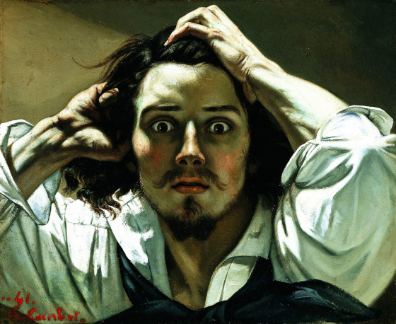

Biografia

Michelangelo Merisi Da Caravaggio destacó por su talento artístico tanto como por su polémica vida privada. Genio loco, homosexual atormentado, artista violento... El «chico malo del Barroco» acumuló una gruesa hoja de antecedentes: arrestado por llevar una espada sin permiso el 4 mayo 1598; demandado por golpear a un hombre con un bastón en 1600; acusado de insultar y atacar a otro hombre con una espada en 1601; implicado en un asalto a un camarero tras servirle alcachofas en una taberna en 1604; arrestado por arrojar piedras a un policía ese mismo año, etc., etc. Y finalmente, el 28 mayo 1606, sentenciado a muerte por matar y mutilar a un hombre durante una pelea en la zona del Campo Marzio (Roma).
Si algo puede definir la obra de Caravaggio es precisamente esa lucha entre la luz y la oscuridad que parece que imperó en su propia vida, así como su capacidad de mezclar lo sagrado con lo profano a través de personajes que irradian miseria. Y es que esa fue la clase de personas que solía pulular a su alrededor.
Nacido en Milán, Caravaggio aprendió el arte del pincel en una escuela de pintura manierista cuando el Renacimiento vivía sus últimos días. El joven pintor adquirió su peculiar estilo tenebrista tras deambular por las callejuelas de las ciudades del norte de Italia, si bien fue en Roma donde se consagró como el genio del Barroco que hoy atesora su obra.
En 1592, Caravaggio llegó a la Ciudad Eterna con lo puesto. O ni siquiera eso. Un rumor persistente aseguraba que, siendo solo un niño, en Milán había matado a un compañero de juegos tras un berrinche y su familia le había despachado lo más lejos posible. «Desnudo y extremadamente necesitado, sin una dirección fija, sin provisiones... y además corto de dinero», describen sus primeros biógrafos. No encontró su primer techo hasta que empezó a trabajar como «pintor de flores y frutos» en el taller de Giuseppe Cesari, el favorito del Papa Clemente VIII. Pero no tardaría en marcharse de aquel taller cansado de pintar parras y frutas. Él quería pintar humanos, a poder ser sucios, harapientos y repletos de detalles.
Con la ayuda del pintor Prospero Orsi pudo entrar en el exclusivo mundo del arte y alzarse pronto como una de las estrellas de la Contrarreforma, el movimiento católico empleado para contrarrestar la Reforma protestante. El cardenal Francesco María del Monte apostó por Caravaggio y le brindó la oportunidad de su vida: pintar una de las capillas de la iglesia de san Luis de los Franceses. Ya aquí Caravaggio empezó a representar a figuras religiosas como personas de la calle, con sus deformaciones físicas y malencarados cuando era necesario. Ancianos, mugrientos, mujeres públicas, niños callejeros… el pintor milanés realizó una suerte de crónica callejera del periodo valiéndose de sus pinturas religiosas. Todo ello aderezado por luces y sombras para resaltar el dramatismo teatral de las composiciones.
Precisamente la presencia de hombres de baja escala social ligeros de ropa en sus pinturas ha dado pábulo a especular sobre la posible homosexualidad del pintor. Incluso hubo contra él acusaciones de pederastia a raíz de su estrecha relación con el adolescente Cecco, que posó en algunas de sus obras más controvertidas. No en vano, uno de los últimos biógrafos del italiano, Andrew Graham-Dixon, prefiere definir a Caravaggio como «omnisexual» en su obra «Una vida sagrada y profana» (Taurus, 2011); es decir, interesado tanto en los hombres como en las mujeres y a la vez desinteresado del todo en ambos.